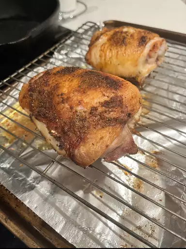

Baked Chicken

Description
A simple dish that will take less than 40 minutes to make.
Ingredients
- 6 skin-on and bone-in chicken thighs
- Dry-rub seasoning of your choice
Steps
- Preheat oven to 400 degrees F and place aluminum foil in baking pan.
- Rub seasoning onto chicken and place it in the baking pan.
- Bake chicken for 40 minutes in preheated oven.
- Let chicken cool for 5 minutes before serving